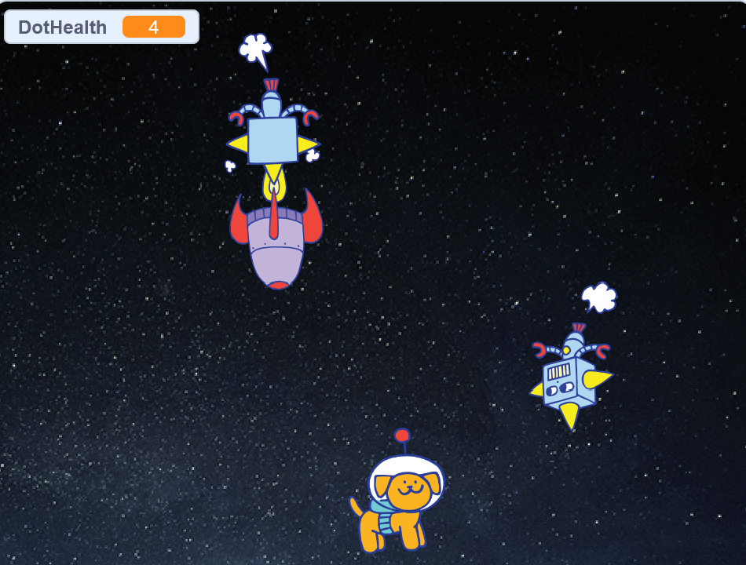
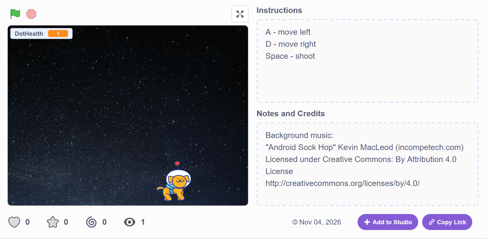
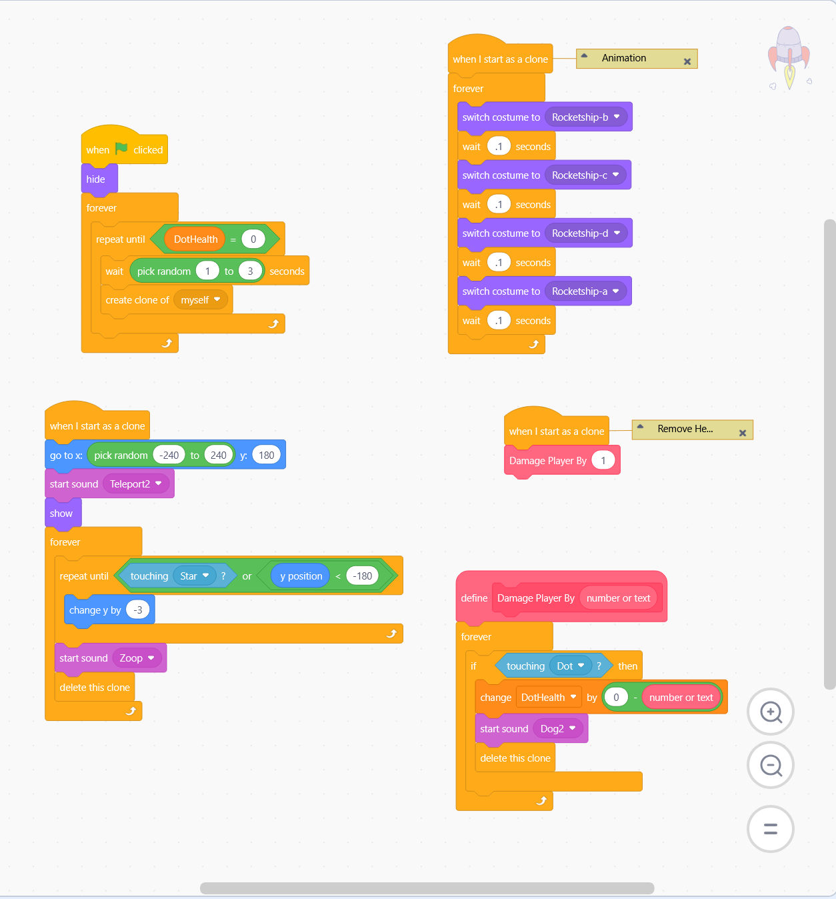

11.04.2026
This week was a nice, easy introduction to basic computing concepts and logic, such as variables, conditions, and counting in binary code. This is primarily review for me, but a nice refresher nonetheless.
The homework was to create a project in Scratch that satisfies the following conditions:
I designed a very simple "Space Invaders" style game. You play as Dot, an astronaut dog, and must shoot stars at invading spaceships and robots. If the enemies hit you, you lose 1-2 damage (depending on enemy type). Enemies randomly spawn every few seconds at varying locations above you.
Play here: https://scratch.mit.edu/projects/1400263895/

I've actually never used Scratch or a block-based coding program before, so there was a little bit of a learning curve when it came to figring out the organization of the site. There are some basic commands "pre-programmed" into blocks, but you can basically write up any method you want once you get the hang of dragging and dropping conditions and variables around.
My biggest challenge was organizing scripts by action - trying to do too much in one script led to a lot of timing conflicts within the game. For example, my rocket ship sprite needs to do two different things: 1. Move vertically across the screen and 2. Damage the player on contact. I tried fitting them both within one script, but the actions conflicted/couldn't execute properly at the same time. Therefore, I separated them into two different scripts that both start with the "when I start as a clone" condition, but within their own separate spaces to execute simultaneously.
Another challenge was trying to meet all of the criteria, mostly with the custom block that takes an input. I ended up creating a custom block for the Rocket and Robot enemy sprites called "Damage Player By," which is basically a function that detects if the enemy has made contact with the player and then takes away some health points from the player. The number of health points is an int variable. It's useful for quick playtesting changes because it's visually a lot easier to locate within the script, but ultimately feels a little unnecessary because the specific number of health points taken away can just be hard-coded into the Rocket or Robot enemies without issue. Maybe if I keep adding to the game (i.e., a score, main menu, different weapon options, etc.) an opportunity for a custom block like that will naturally present itself.

Image: Game screenshot

Image: Rocket ship block code
I spent a few hours on this project, including looking at reference projects. I don't see myself making many updates, but it would be fun to clean up the scripts a little more and add a couple of features to make it feel more like a complete game, such as hearts to represent health and a score system.
My future goals for upcoming projects are to focus more on code organization - AKA, having nice, presentable scripts! I tend to comment a lot on scripts for my own and others' reference, so I'm also trying to figure out a good balance of comments where necessary vs. overkill. I'd rather over-comment than have someone totally confused, but I also don't want to overwhelm with huge blocks of text.